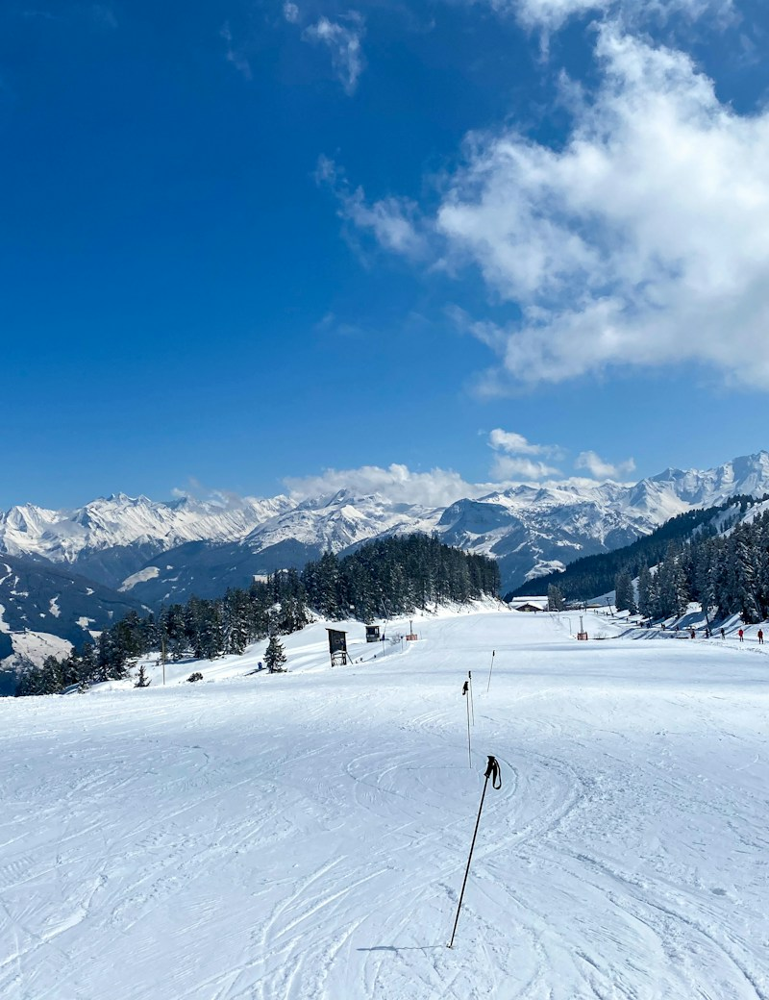

Hello, I’m Henry
A little tech.
A little fresh air.
At home, I’m tinkering with small computers and a smarter home. Outside, you’ll find me chasing my next day on skis.
Welcome to my corner
01 At home
Small machines.
Endless possibilities.
My homelab is where I get to be curious. A mix of self-hosted services, a little automation, and hardware that’s fun to tinker with.
What’s in the mix
01Home AssistantHome automation
A smarter home, on my own terms. Home Assistant brings my interest in self-hosting and home automation together.
Explore Home Assistant02TeslaMateSelf-hosted vehicle data
Tesla data gets a home in the lab, too. I host TeslaMate as part of my setup—a neat intersection of cars, data, and self-hosting.
Explore TeslaMate03UniFiThe network
All those little machines need to connect. UniFi hardware is the networking side of my home setup.
Explore UniFi04Raspberry PiSmall computer, big potential
There’s something satisfying about a computer this small. A Raspberry Pi is part of my collection of hardware for tinkering and exploring.
Explore Raspberry Pi05Mini PC + UbuntuA little Linux box
A mini PC running Ubuntu rounds out the lab. Compact hardware, Linux, and room to keep experimenting.
Explore Ubuntu02 Outside
Trading the keyboard
for a pair of skis.
I love skiing. The cold air, the mountain views, the feeling of finding a rhythm on the snow. Some things are worth closing the laptop for.
My favorite kind of offline.goes a long way. LESS SCROLLING. MORE SKIING.
A little mountain inspiration. Photography by Febe Vanermen and Florian Rauchberger / Unsplash.
Always a work in progress
Keep tinkering.
Keep getting outside.
That’s a little about me. For the things I build
and experiment with, you can find me on GitHub.